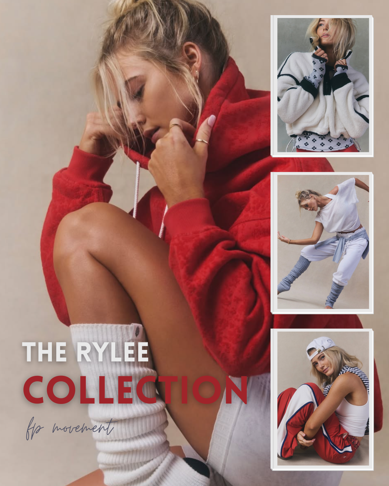
FP Movement x Rylee Arnold
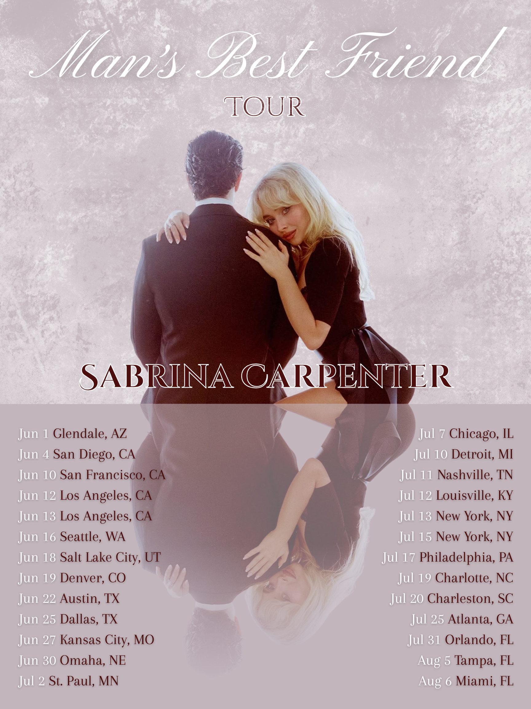
Sabrina Carpenter Tour Dates Annoucement
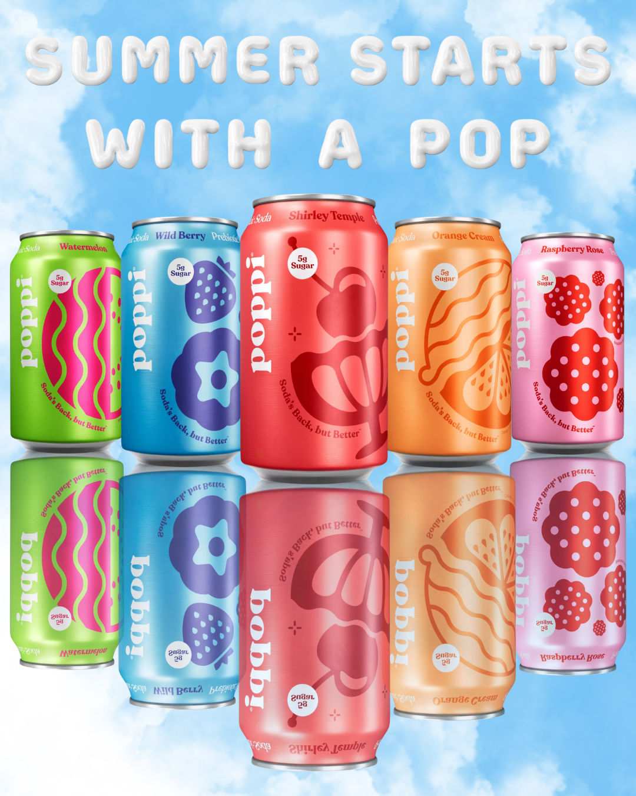
Poppi Summer Collection
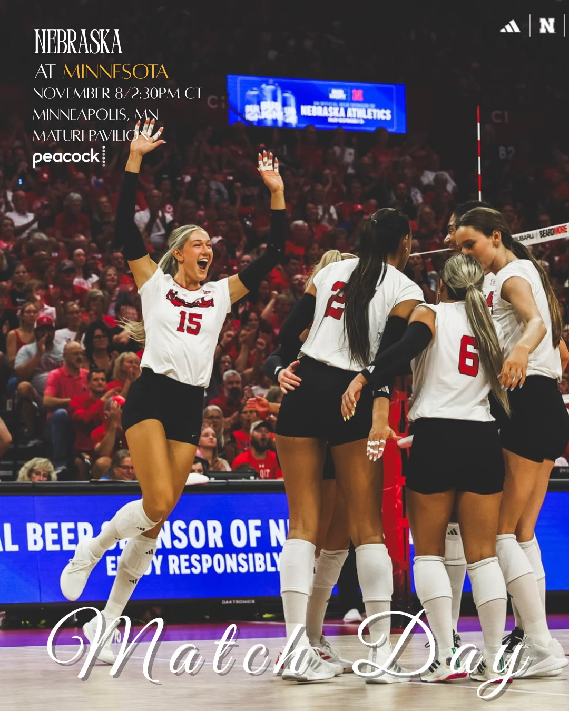
Nebraska Volleyball Game Day
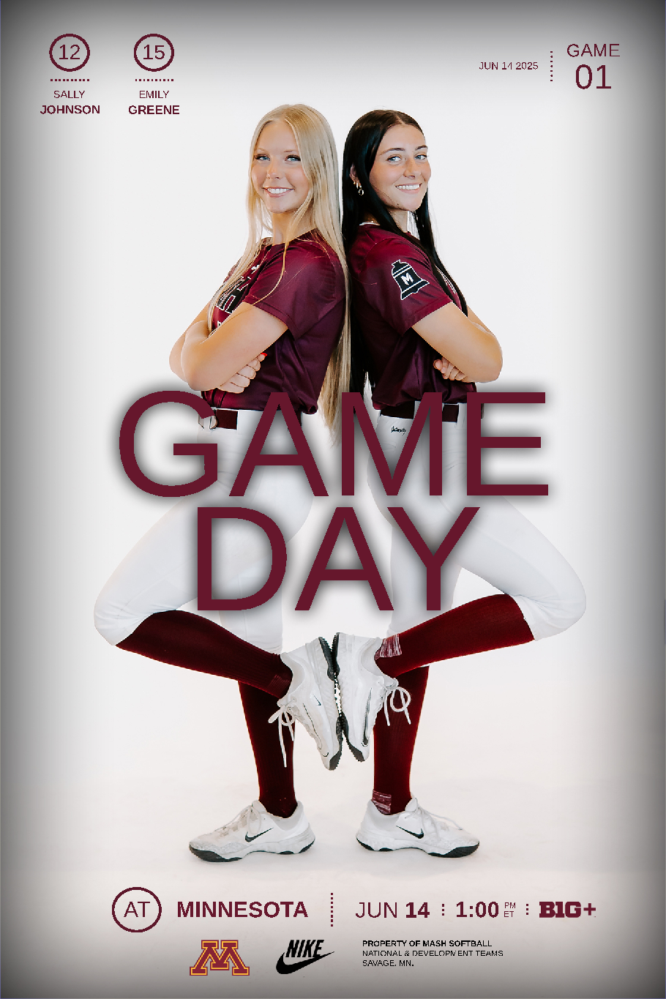
MASH Game Day
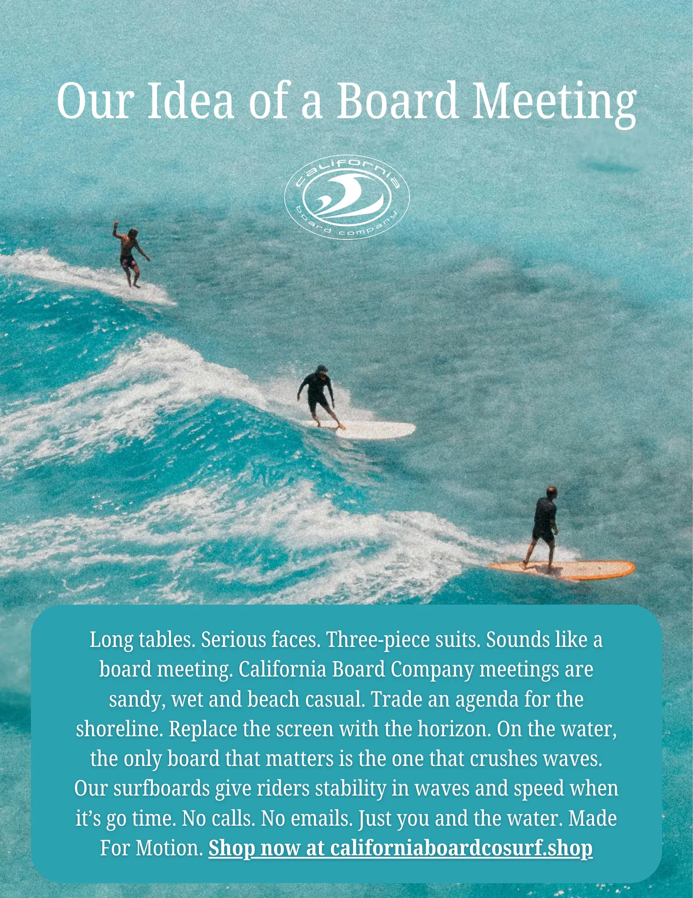
California Board Company Print Ads
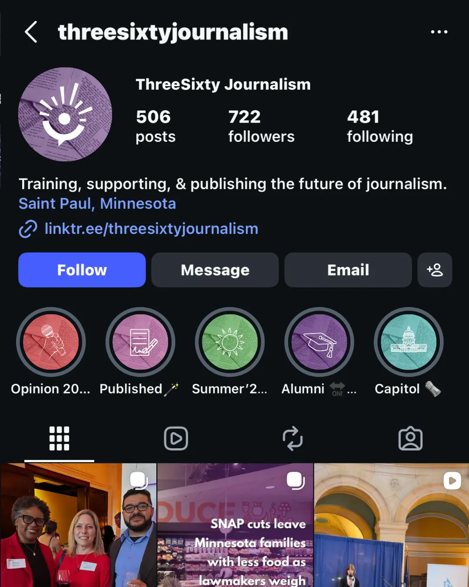
ThreeSixty Journalism Client Work
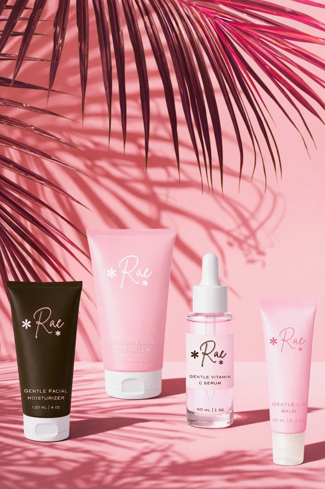
Rae Skincare Brand
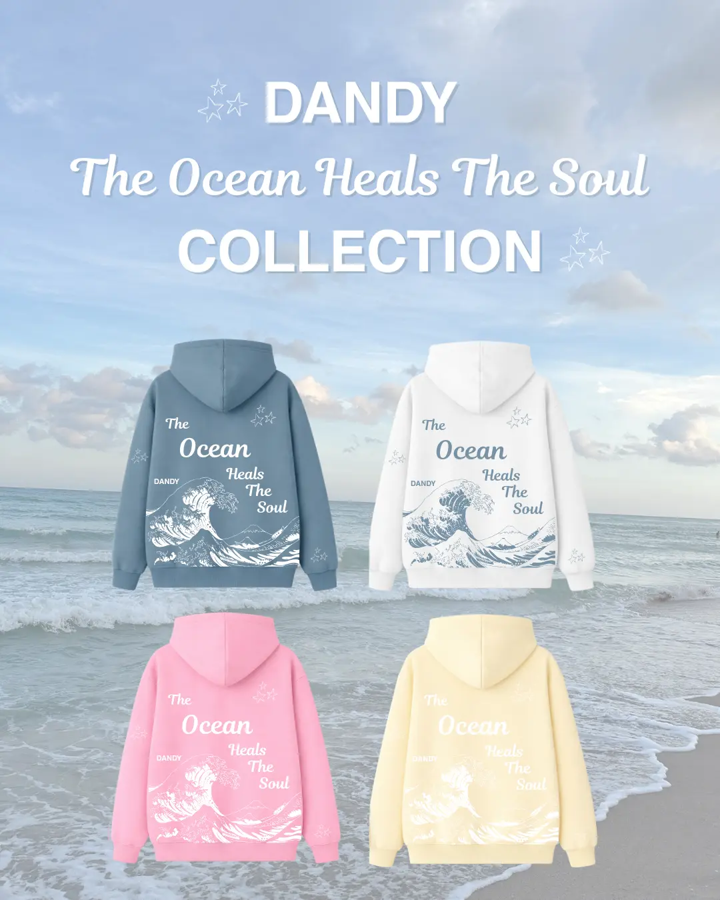
DANDY Collection
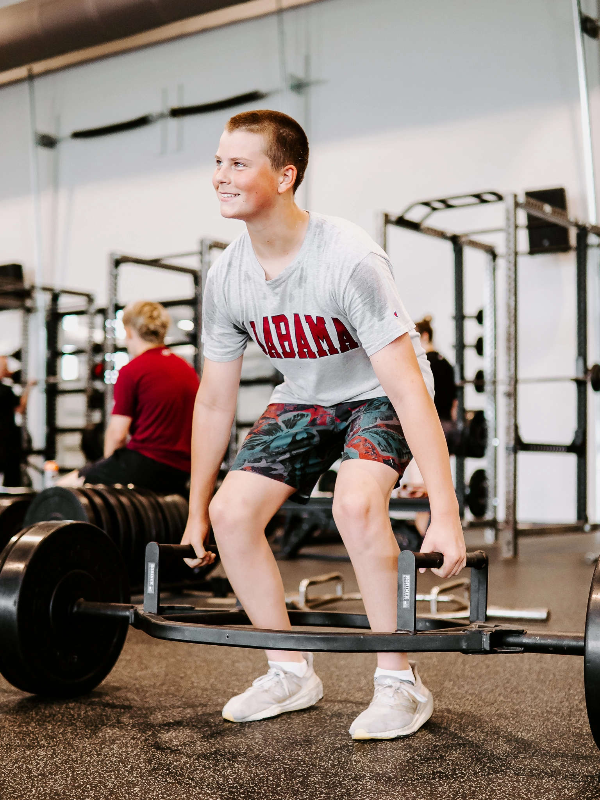
MASH Internship Photos
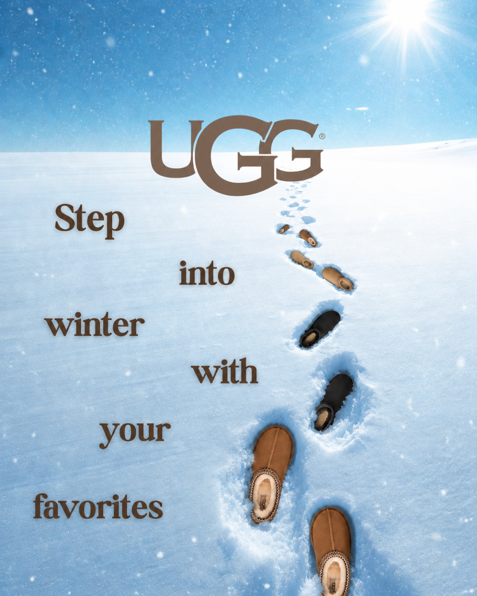
UGG Winter Favorites

Nature Photos